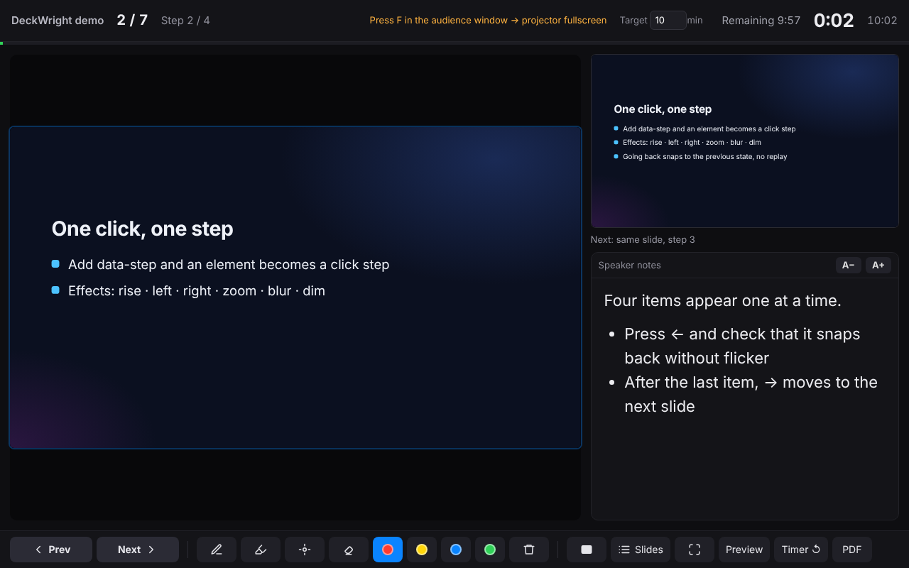
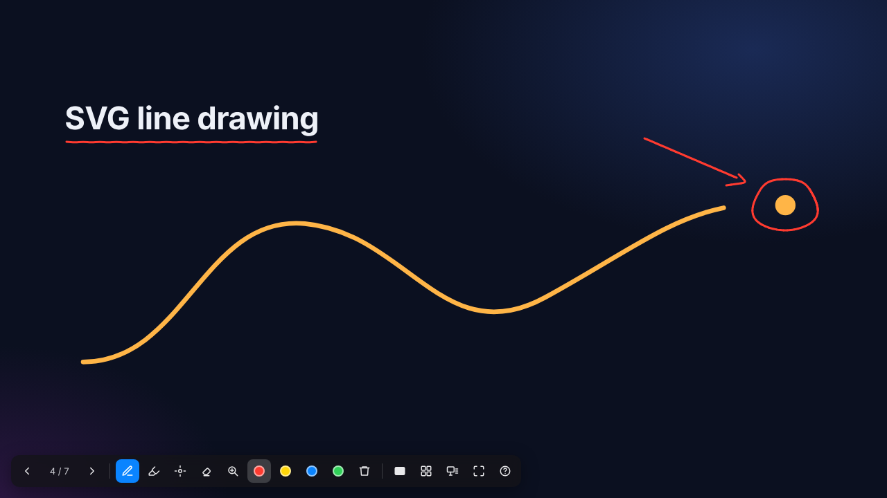
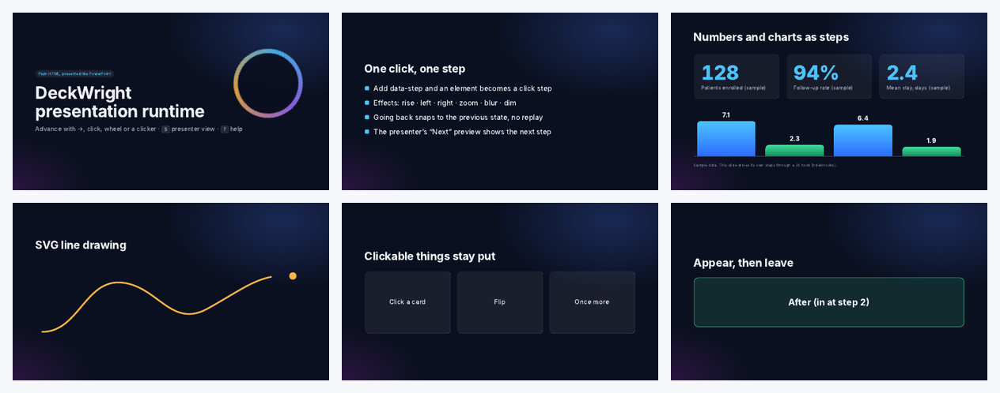
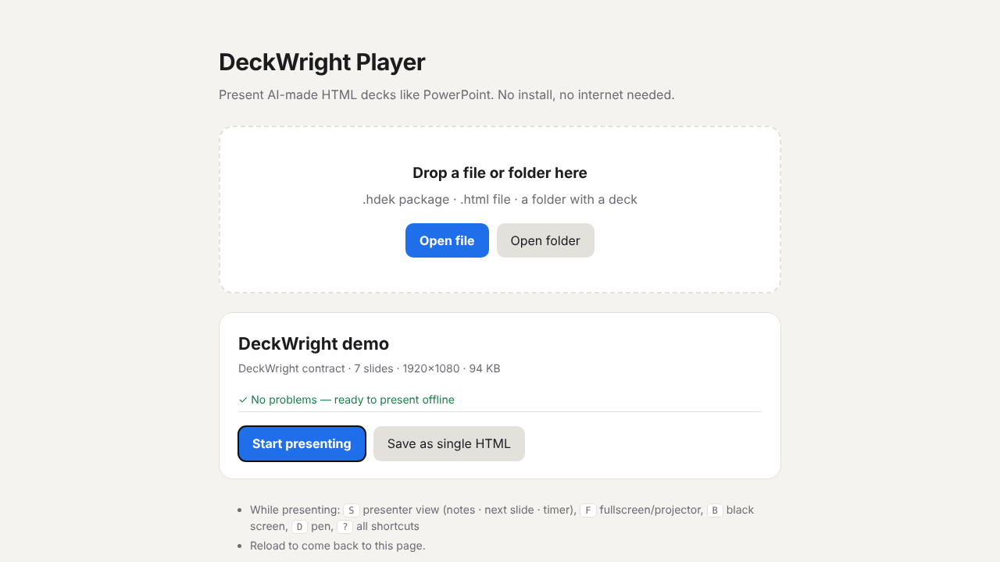

Your slides on their screen. Your notes on yours.
Click steps · presenter view · pen · print to PDF · one HTML file, no install, no internet
Present the HTML decks your AI makes the way you present PowerPoint.




Open the demo deck, press S for the presenter view and ? for every shortcut. Arrow keys, a clicker, the mouse wheel and clicks all advance.
| You use | Install |
|---|---|
| Claude Code | claude plugin marketplace add grotyx/deckwrightclaude plugin install deckwright@deckwright |
| Codex, Cursor, opencode … | npx skills add grotyx/deckwright -g |
| claude.ai | deckwright-skill.zip → Settings → Capabilities → Skills |
| No AI | player.html, or npm install -g github:grotyx/deckwright |
"make this HTML deck presentable" "make a 15-minute talk on X as a DeckWright deck" "make it one file I can email" "export a PDF and PPTX backup"
Read the user guide or the spec.